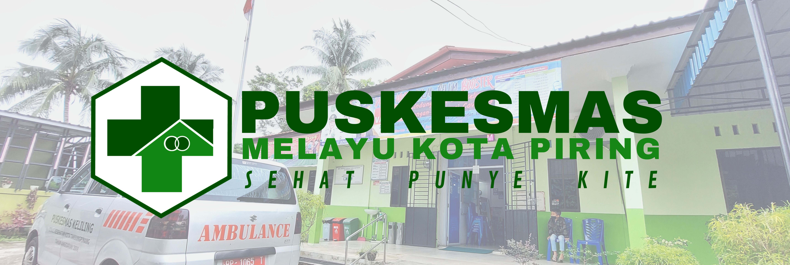

Selamat Datang di Website Resmi Puskesmas MinPro
Website ini dibuat untuk mengenalkan Puskesmas MinPro kepada masyarakat luas. Berisi berbagai macam informasi terkait baik pelayanan maupun kegiatan yang ada di Puskesmas MinPro.
Pengunjung website ini juga dapat menggunakan fitur TANYA DOKTER untuk mengetahui informasi terkait dengan penyakit, tindakan dan pengobatan tanpa perlu bertemu dokter secara langsung. Kami akan usahakan
membalas pertanyaan anda secepat mungkin.
Kami harapkan anda bersedia menghubungi kami baik melalui telepon, email, maupun formulir kontak pada halaman Hubungi Kami untuk memberikan masukan-masukan demi pengembangan pada pelayanan kami. Terima kasih. ANDA SEHAT, KAMI
SENANG!